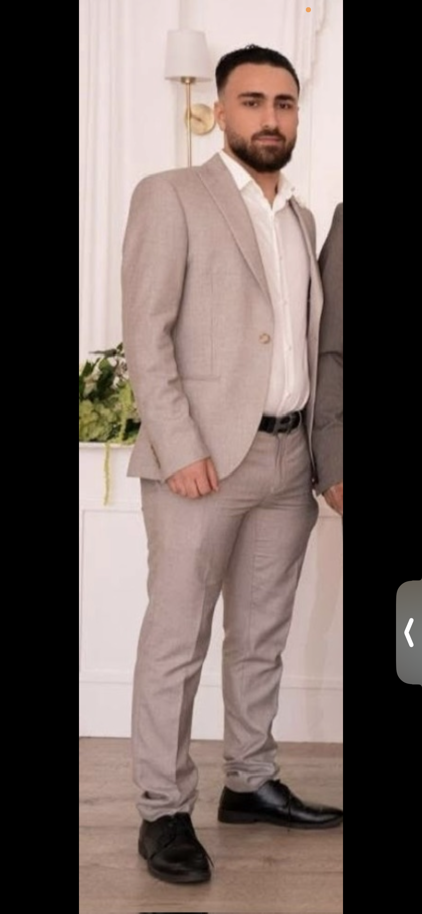

PÅGÅENDE UTBILDNING
Data Manager
TUC Yrkeshögskola
Bromma
Utbildning med inriktning mot Data Management, databaser och IT.

Jag studerar till Data Manager på TUC Yrkeshögskola i Bromma. Jag är intresserad av databaser, programmering och IT-säkerhet och vill fortsätta utvecklas inom IT. Jag söker nu en LIA-plats där jag får möjlighet att använda mina kunskaper, lära mig mer och bidra till ett engagerat IT-team.
Se mina projekt ↓ Kontakta mig LinkedIn-profil → GitHub-profil → Ladda ner mitt CV ↓Jag söker en LIA-plats inom Data Management, databaser eller IT där jag kan utveckla mina praktiska kunskaper och få erfarenhet av att arbeta i en professionell miljö.
Jag är motiverad, ansvarstagande och nyfiken på att lära mig nya tekniker och arbetsmetoder.
Tillgänglig för LIA under hela denna period.
Jag studerar Data Manager på TUC Yrkeshögskola i Bromma och har tidigare studerat informationsteknik på NTI Gymnasiet i Södertälje. Under min praktik på Power fick jag erfarenhet av IT-relaterade uppgifter, kundservice och teknisk support.
Jag är ansvarstagande, engagerad och nyfiken på teknik. Jag tycker om att lösa problem, utveckla mina kunskaper och arbeta med tekniska lösningar. Jag söker en LIA-plats där jag kan lära mig mer och bidra till ett IT-team.
TUC Yrkeshögskola
Bromma
Utbildning med inriktning mot Data Management, databaser och IT.
NTI Gymnasiet
Södertälje
Gymnasieutbildning med inriktning mot informationsteknik.
Områden jag studerar och vill utvecklas vidare inom:
SQL Python Databaser Datasäkerhet Cybersäkerhet IT-support Dataanalys ETL SQLiteHär samlar jag egna övningar och projekt från min utbildning.
Ett dataanalysprojekt där jag undersökte samband mellan depression bland universitetsstudenter och faktorer som akademisk press, sömn och ekonomisk stress. Jag byggde en backend med Node.js och Express, använde SQLite och SQL samt skapade API:er för att hämta och presentera statistik.
Tekniker: JavaScript, Node.js, Express, SQL, SQLite, HTML och CSS.
Se projektet på GitHub →Ett projekt där jag arbetade med att rensa, strukturera och bearbeta data från en matkassetjänst. Projektet innehåller datatransformationer, en SQLite-databas och visualiseringar av data.
Tekniker: ETL, SQLite och dataanalys.
Se projektet på GitHub →Är ditt företag intresserat av en LIA-student inom Data Management, databaser eller IT? Kontakta mig gärna. Jag ser fram emot möjligheten att presentera mig och berätta mer om vad jag kan bidra med.
E-post: Kastanfadi@gmail.com
Telefon: 076 811 0716
Skicka e-post Ring mig LinkedIn →